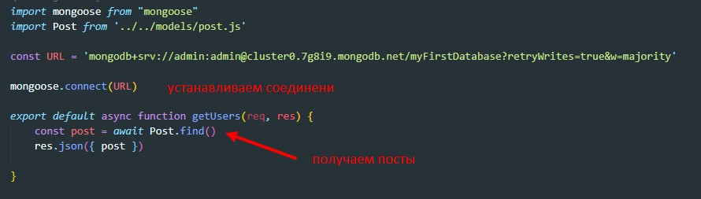
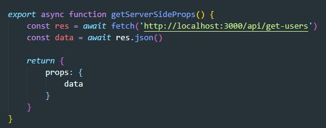

Предполагается, что у нас уже создан атлас в mongoDb и у нас есть ссылка до кластера
Первое что нужно сделать - это импортировать mongoose
npm i mongooseЗдесь обращаем внимание на то что возвращаем мы либо уже созданную модель, либо новую модель. связано это с тем, что если экспортировать просто модель то мы можем поймать ошибку
overwritemodelerror: cannot overwrite `post` model once compiled.
Дальше переходим в файл эндпоинта и там прописываем следующий код:
Передаем данные на фронт
